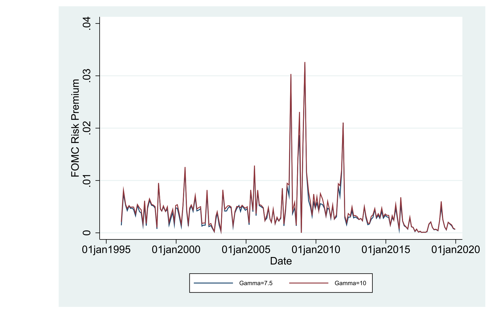
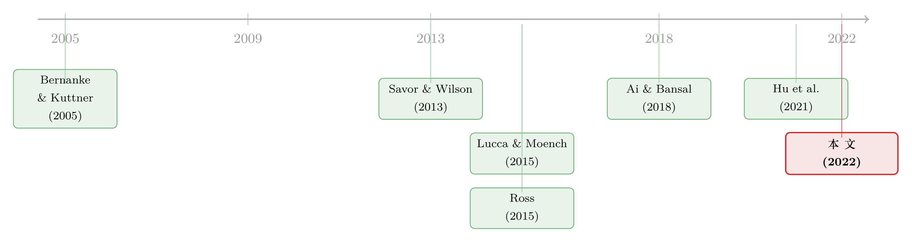

把「这一次会议」的恐惧，从期权价格里解出来
本文读的是 Liu, Tang & Zhou (2022, Journal of Financial Economics)：作者提出一种用「到期日紧贴会议之后」的标普 500 指数期权来逐次会议反推 FOMC 风险溢价的方法。1996–2019 年的 192 次会议里，这个溢价在 1 到 326 个基点之间剧烈摆动，均值约 45 bps；用它做样本外预测，会议前后市场收益的 R² 高达 7.51%；预测出的平均上行漂移 101 bps、下行漂移 129 bps，都与事后真实的漂移对得上。
1 引言：一个被「平均」掉的问题
先说一件几乎人尽皆知的事。美联储公开市场委员会（Federal Open Market Committee, FOMC）开会的那几天，是全年最重要的经济事件之一。更有意思的是，钱并不是在公布利率的那一刻才被赚到的——Savor and Wilson (2013) 与 Lucca and Moench (2015) 发现，真正的超额收益集中在会议公布之前的 24 到 48 小时里，这段「事前漂移 (pre-FOMC drift)」竟然占了市场全年收益的 60% 到 80%。投资者像是早早地、提前地把一笔风险补偿支付了出去。
到这里，故事似乎已经讲完了：市场在 FOMC 之前要风险溢价，平均值算出来就好。
但接着，一个自然的问题是：这个溢价，每次会议都一样吗？
直觉上当然不一样。2008 年 10 月那次会议前的提心吊胆，和 2015 年某个「板上钉钉不动」的会议前的风平浪静，怎么可能要同样的风险补偿？可问题在于，过去文献能算的，几乎都是已实现的平均事前收益——它是一个好的「无条件 (unconditional)」估计，却天然抹掉了会议之间的差异。原因很朴素：已实现收益只告诉你「这一次最终往上还是往下」，它永远只采样到一条路径。当真实结果是上涨时，你根本无从知道「如果当时是下跌会跌多少」；反过来也一样。于是平均出来的，只能是一个被时间和状态同时「平均」掉的数字。
这正是本文的核心张力：风险溢价像许多别的溢价一样会随经济状态起伏，可我们手里却只有一把「无条件」的尺子。要回答「这一次会议的恐惧值多少」，必须找到一个能在会议逼近时、事前就读出条件溢价的工具。
然后，作者把目光投向了一个被忽略的角落：期权。
2 核心思路：让「快到期的期权」替你说话
用期权价格去反推风险溢价或概率分布，本身并不新鲜——这是一整条「恢复 (recovery)」文献做的事（关于从期权价格里读出未来概率分布，可参见《把未来的概率从期权价格里「读」出来》）。本文真正新颖的一步，是把镜头对准一类很特殊的期权：到期日恰好落在 FOMC 会议公布之后不久的标普 500 指数期权，并且只用会议公布前最后一刻的报价。
为什么这个限定如此关键？作者的论证干净得近乎苛刻：
在会议逼近的那一刻，一份「会议后马上到期」的期权，它的价格几乎只反映一件事——这次会议的决定。因为此时投资者唯一在意的重大信息就是会议本身，而「另一条重要宏观消息恰好与 FOMC 公布同时落地」的概率近乎为零。于是从这些期权价格里反推出来的风险溢价，就几乎没有被其它风险因子污染，可以干净地归因于这一次会议。
这是一种非常漂亮的「事件隔离」思想。它和现有恢复文献的差别也正在这里：Ross (2015) 们做恢复，需要大量、不同行权价、且长期限的可靠期权价格；而越是长期限的期权，越会把会议之外的种种风险一并卷进来，反推出的「溢价」也就越不像是「某一个事件」的溢价。本文反其道而行——用短到不能再短的期权，把一个事件单独框出来。
接着，一个工程上的难题是：24 到 48 小时窗口、又是短期限期权，流动性很差，能用的合约数量很少。怎么办？作者干脆退到一个最朴素的两状态模型：会议之后，市场要么向上漂一个幅度，要么向下漂一个幅度。一上一下，仅此而已。
3 模型：从期权价格到状态价格，再到物理概率
这篇论文有一个紧凑而完整的均衡定价模型，值得一步步拆开看。
3.1 设定
时间离散，t = 0, 1。一个事件发生在 t = 0− 与 t = 0+ 之间，资产价格在 0+ 跳跃。存在一个代表性厂商，生产单一消费品；代表性代理人持有厂商发行的一股股票。沿用 Ai and Bansal (2018) 的关键假设：事件到来时，厂商的分红与代理人的消费都不跳，跳的只是投资头寸——也就是说，事件冲击全部体现在资产价格上，而非当期消费上。这正是「事前漂移」能够干净出现在价格里的微观基础。
一般地设有 N 个正收益状态、N 个负收益状态：
$$r_1^+ > r_2^+ > \cdots > r_N^+ > 0, \qquad r_1^- < r_2^- < \cdots < r_N^- < 0.$$
主分析聚焦最简单的两状态情形（N = 1）：一个上行漂移、一个下行漂移。
3.2 第一步：用期权价格反推「跳跃幅度」与「状态价格」
这是全文的脊梁。作者用价外 (out-of-the-money, OTM) 看涨期权去识别正向跳跃，用价外看跌期权去识别负向跳跃。令 C_j 为第 j 个看涨期权的价格、K_j^C 为其行权价，定价恒等式为：
看跌一侧完全对称：
$$P_j = \sum_{i=1}^{N} \pi_{N+i}\,\big[\,K_j^P - (1+r_i^-)S_0\,\big]_+ .$$
它的含义很直白：期权价格 = 各状态收益按状态价格加权求和。反过来，只要有足够多不同行权价的期权报价，这组方程就能把状态价格 π_i 和跳跃幅度 r_i 一起解出来。Proposition 1 给出了解存在且唯一的充要条件，以及解析解。
在两状态特例下，结果可以写成漂亮的闭式。上行跳跃幅度 u、上行状态价格 π_u：
$$u = \frac{C_1 K_2^C - C_2 K_1^C}{S_0 - (C_1 - C_2)} - 1, \qquad \pi_u = \frac{C_1 - C_2}{K_2^C - K_1^C};$$
下行跳跃幅度 d、下行状态价格 π_d：
$$d = 1 - \frac{P_2 K_1^P - P_1 K_2^P}{S_0 - (P_2 - P_1)}, \qquad \pi_d = \frac{P_1 - P_2}{K_1^P - K_2^P}.$$
这里有一个实操上的小心思：作者偏好用接近平价 (close-to-the-money, CTM) 的期权来反推，因为 CTM 期权流动性更好、价格更少被流动性扭曲。文中还顺手验证了「把标的资产本身看作行权价为零的期权」得到的估计与上式差别小于 0.1%，间接说明市场相当有效。
3.3 第二步：从风险中性到物理概率，再到风险溢价
到这一步，我们手里有了状态价格 π_i 和各状态收益 r_i。但状态价格混着两样东西：真实发生概率和风险定价。要把风险溢价拆出来，必须引入偏好。
作者采用 Ai and Bansal (2018) 的 Epstein–Zin 递归效用，瞬时效用为 u(c) = c^{1-1/ψ}/(1-1/ψ)，其中 ψ 是跨期替代弹性 (intertemporal elasticity of substitution, IES)、γ 是相对风险厌恶系数。由此可写出随机贴现因子 (stochastic discount factor, SDF) m_i^*。剩下的逻辑是三个环环相扣的等式——
把状态价格归一化，得到风险中性概率 (risk-neutral probability) q_i：
$$q_i = \frac{\pi_i}{\sum_{j=1}^{2N}\pi_j}.$$
而按定义，风险中性概率等于物理概率乘以 SDF：
$$q_i = p_i\, m_i^*.$$
于是，给定偏好参数，就能从可观测的 q_i、r_i 反解出物理概率 p_i。最后，风险溢价就是物理测度下的期望超额收益：
$$E(r) = \sum_{j=1}^{2N} p_j\, r_j.$$
直觉上：期权价格给了我们「市场用钱投票」的风险中性概率；偏好参数告诉我们「投资者对坏状态有多厌恶」；两者一相除，把风险厌恶剥掉，剩下的就是真实概率；再用真实概率给各状态收益加权，得到的，就是这一次会议的事前风险溢价。整套流程只用会议前一刻的期权价格，因此是前瞻的 (forward-looking)——这恰恰是已实现收益做不到的。
必须承认，这套恢复依赖一组事先设定的偏好参数。基准取 IES = 1.5、γ = 10，作者也报告了 γ = 7.5 的结果。换句话说，得到的「溢价数值」是条件在某个效用模型上的——后文我会把它列为对识别的主要担忧之一。
4 主要结果：原来恐惧真的会「变脸」
现在回到那个核心问题：FOMC 风险溢价每次都一样吗？
答案是响亮的「不」。在 1996–2019 的 192 次会议中，恢复出的 FOMC 风险溢价从最低 1 个基点一路跨到最高 326 个基点，长期均值约 45 bps。值得强调的是，这个 45 bps 的均值，和文献里已实现事前收益的平均值、以及事前漂移的平均量级对得很好——这说明本文方法在「平均」意义上是自洽的，但它额外给出了被旧方法抹掉的那层横截面波动。
第二个结果关于漂移的幅度。两状态模型直接产出上行漂移和下行漂移的预测：平均预测上行 101 bps、平均预测下行 129 bps，二者都与各自事后已实现的上、下行漂移紧密吻合。这是一记漂亮的「数量对账」——模型不是在拟合一个均值，而是同时把「往上能涨多少、往下能跌多少」两条腿都预测对了。
但真正关键的一步在于预测能力。作者把恢复出的条件溢价拿去做样本外预测，预测会议前后的市场收益，得到样本外 R² 等于 7.51%。放在收益可预测性这条以「能跑赢历史均值一点点就算成功」著称的文献里（Campbell and Thompson, 2008; Welch and Goyal, 2008），7.51% 是一个相当高、且经济意义显著的数字。
于是反转出现了：那个一直被当作「常数」来处理的 FOMC 溢价，其实是一头会随经济状态呼吸的活物。作者进一步检验它和宏观环境的关系，发现一组高度符合直觉的模式——当消费增长、GDP 增长或通胀偏低时，当 VIX 偏高时，当市场更悲观时，FOMC 风险溢价更高。坏天气里，投资者索要更高的风险补偿，这正是风险溢价该有的样子。
在稳健性部分，作者还回头审视了一个容易被忽略的细节：事前漂移到底发生在哪一段时间窗口？他们估计了真实的事前时段，并与人为设定的「伪 (pseudo)」事前时段做对比，逐年画出时间序列，确认所用窗口确实捕捉到了漂移集中出现的那一段。

Figure 6: presents time-series plots of the estimated FOMC pre-announcement period, that is, unlike the “pseudo”pre-
此外，作者把方法外推到别的宏观公告上，发现通胀率和失业率的公布同样存在可观的事前风险溢价。这一点有意思之处在于：它正面回应了 Ernst et al. (2019) 对「宏观公告溢价可能源于样本选择偏误」的担忧——如果这些事件在事前就被期权市场定价，那它们就不只是「事后碰巧重要」，而是事前被投资者真正认为重要。
5 文献脉络
把这篇论文放回它的来路，会看得更清楚。
最早，人们关心的是货币政策意外本身对市场的冲击（Bernanke and Kuttner, 2005）。接着，研究的重心从「公布那一刻」前移到了「公布之前」：Savor and Wilson (2013) 用一批预定的经济公告，发现投资者在公告前要求显著更高的风险补偿；Lucca and Moench (2015) 把这一现象在 FOMC 上刻画得淋漓尽致，正式命名了「事前漂移」。
然后，理论开始追上来。Ai and Bansal (2018) 用一个递归效用模型，把这段高额事前收益解释为不确定性在公告时被解决所要求的补偿——这也正是本文借来反推溢价的偏好框架。Hu et al. (2021) 则提出双风险模型，用「不确定性升高」来解释这个溢价。与此同时，另一条平行的线索是「恢复」文献：Ross (2015) 开创性地主张可以从指数期权里恢复出整个物理分布，随后 Borovička et al. (2016) 指出其「转移独立」假设过强，Martin (2017) 转而给出一个不依赖该假设、但只是界而非点估计的市场溢价。

本文恰好站在这两条线的交汇处：它继承了「事前漂移」这条实证脉络要回答的核心问题——溢价是否随会议变化；又用「恢复」这条方法论脉络的工具去回答它，但把恢复所需的期权期限压缩到了 24–48 小时，填上了现有恢复文献「最短只能做到一个月」的空白。作者据此成为第一篇恢复出条件 FOMC 风险溢价的论文。围绕 FOMC 与货币政策被市场如何解读，相关讨论也可参见《被错读的，不是风险，是美联储》与《加息到底有没有用？》。
6 评论与延伸（Q&A + 研究方向）
(a) 几个可能的疑问
Q：这和直接算「事前平均收益」到底差在哪？
差在「条件 vs 无条件」。已实现平均收益每次只采样到一条已实现路径，永远无法同时观察到「如果反向会怎样」，因此只能得到一个被状态平均掉的无条件溢价。本文用会议前一刻的期权价格，同时读出上行与下行两个状态的概率与幅度，从而给出逐次会议的条件溢价——
1到326bps 的巨大跨度，正是无条件方法看不见的那层信息。
Q：把期权期限压到 24–48 小时，不就撞上了它最不擅长的流动性问题吗？
是的，这是方法的命门。作者的应对有二：一是退到只需少数几个行权价的两状态模型；二是偏好用流动性更好的 CTM 期权来反推。即便如此，83/192 次会议才有可用的近到期期权，其余靠机器学习补齐——这意味着结论对约 57% 的会议依赖外推。
Q：恢复出来的「溢价数值」可信吗？它不是依赖你假设的效用函数吗？
数值确实是条件在
IES = 1.5、γ = 10的 Epstein–Zin 偏好之上的，换参数（如γ = 7.5）数值会变。但要注意：横截面变化（哪次会议更恐惧）主要由期权价格驱动，对偏好参数没那么敏感；偏好参数更多影响的是溢价的绝对水平。均值45bps 能与文献独立对上，是一个让人安心的外部校验。
Q：7.51% 的样本外 R² 是不是高得反常？
在收益可预测性文献里，能稳定为正、且高于历史均值基准就已不易。
7.51%确实偏高，但它预测的是会议前后的窄窗口收益，而非月度或年度市场收益——窗口越短、信号越集中于单一事件，可预测性自然更高。把它和长期限收益预测直接比并不完全公平。
Q：为什么用看涨期权识别上行、看跌识别下行，而不是混用？
作者引 An et al. (2014)：掌握利好信息的知情交易者更倾向买入看涨期权，因此看涨价格更能反映正向跳跃信息，看跌则更能反映负向跳跃。这是一种基于信息流的分工，目的是让每一侧的估计更干净。
Q：这套方法只能用在 FOMC 上吗？
不。只要是预先排定、经济上重要、且有到期日紧贴其后的流动期权的公告，都能套用。文中已外推到通胀与失业公告，并发现可观的事前溢价。对没有重要公告的日子，若市场足够流动，原则上也能估计——但那些日子的溢价很小，遇到流动性不足时估计会变得不可靠。
(b) 几个可能的研究问题与提案
1）把这套「事件隔离恢复」搬到公司债 / 信用市场。 【经济故事】单只公司或某行业也有预先排定的重大事件（财报、评级复审、重大监管裁决），其信用利差里同样应含一个「事件风险溢价」。若能用紧贴事件到期的信用衍生品（CDS 或债券期权）反推，就能逐次事件地度量「市场对违约消息的恐惧」。 【可行性】中。单券 CDS 期权流动性远不及标普 500 指数期权，短期限合约稀少；可行的折中是聚焦少数极活跃的指数 CDS（如 CDX、iTraxx）在重大宏观事件前的报价，识别策略沿用本文的两状态恢复。
2）外资持有人结构是否放大了 FOMC 事前溢价的横截面波动？ 【经济故事】FOMC 决定通过汇率与全球资金流影响外资。若一只资产的边际定价者更多是外资，其事前溢价对美国货币政策的敏感度可能系统性更高。 【可行性】中。可把本文逐次会议的条件溢价（指数层面）与跨资产、跨国的外资持有比例匹配，做横截面回归；难点在于把「指数层面溢价」下沉到能观测外资持仓的资产层面，需要 TIC 数据或基金持仓数据配合。
3）流动性冲击会不会污染「短期限期权恢复」？ 【经济故事】本文承认短期限期权流动性差，但把它当作噪声处理。一个更尖锐的问题是：当事前窗口恰逢市场流动性枯竭（如 2008、2020），恢复出的「高溢价」里有多少是真实风险厌恶、多少是流动性溢价？ 【可行性】高。把恢复溢价对会议前窗口的期权买卖价差、做市商库存等流动性代理变量回归，即可分解。数据（OptionMetrics + 高频报价）现成，识别清晰。
4）用恢复出的条件溢价构建一个「FOMC 择时」策略并扣成本检验。
【经济故事】既然 R² = 7.51%，一个自然的问题是它能否转化为可交易、扣除交易成本后仍为正的策略。
【可行性】高。在每次会议前按恢复溢价的高低调整指数敞口，用真实期权 / 期货价格与现实成本回测。难点不在数据而在诚实——短窗口、低流动的交易成本极易吞掉纸面收益。
5）把两状态扩到多状态后，「分布形状」本身可预测吗？ 【经济故事】作者也试过四状态、六状态模型。若状态更细，恢复出的不只是均值溢价，还有事前的偏度与峰度——市场是否在某些会议前尤其担心「尾部下行」？ 【可行性】中。多状态需要更多行权价的可靠报价，短期限下数据约束更紧；可只在期权链最丰富的少数会议上做，作为概念验证。
7 我的判断
这篇论文最让我欣赏的，是它把一个老问题（FOMC 溢价）和一个老工具（期权恢复）以一种真正干净的方式焊在了一起：用「会议后即到期、会议前一刻报价」的期权，把单一事件从一锅风险里隔离出来。1 到 326 bps 的跨度本身就是对「常数溢价」假设的有力反驳，而上 / 下行漂移 101 / 129 bps 与事后实现值的对账，比一个孤零零的 R² 更有说服力——它说明模型抓住的不是统计上的巧合，而是经济上的结构。
对识别，我有两点保留。其一是偏好依赖：溢价的绝对水平条件在某个 Epstein–Zin 参数上，虽然均值能与文献对上，但读者应把数值理解为「在该效用模型下的」溢价，而非无模型的事实。其二是数据覆盖：192 次会议里只有 83 次有可用的近到期期权，其余近 57% 靠机器学习外推填补——这部分的可信度，本质上取决于隐含波动率曲面外推的可靠性，值得更细的稳健性披露。
后续我最想看到的，是把流动性这一层正面拆开（提案 3）：在 2008、2020 这种事前窗口恰逢流动性枯竭的时点，恢复出的「高溢价」里究竟有多少是真风险厌恶、多少是被流动性溢价借住了。把这一刀切干净，这套方法才能从「漂亮的恢复」变成「可信的度量」。
参考文献
- Ai, H., Bansal, R. (2018). Risk preferences and the macroeconomic announcement premium. Econometrica 86(4), 1383–1430.
- Ai, H., Han, L.J., Pan, X.N., Xu, L. (2022). The cross-section of monetary policy announcement premium. Journal of Financial Economics 143, 247–276.
- Borovička, J., Hansen, L.P., Scheinkman, J.A. (2016). Misspecified recovery. Journal of Finance 71(6), 2493–2544.
- Campbell, J.Y., Thompson, S.B. (2008). Predicting excess stock returns out of sample: Can anything beat the historical average? Review of Financial Studies 21(4), 1509–1531.
- Lucca, D.O., Moench, E. (2015). The pre-FOMC announcement drift. Journal of Finance 70(1), 329–371.
- Martin, I. (2017). What is the expected return on the market? Quarterly Journal of Economics 132(1), 367–433.
- Ross, S. (2015). The recovery theorem. Journal of Finance 70(2), 615–648.
- Savor, P., Wilson, M. (2013). How much do investors care about macroeconomic risk? Evidence from scheduled economic announcements. Journal of Financial and Quantitative Analysis 48(2), 343–375.
- Vähämaa, S., Äijö, J. (2011). The Fed's policy decisions and implied volatility. Journal of Futures Markets 31(10), 995–1010.
- Welch, I., Goyal, A. (2008). A comprehensive look at the empirical performance of equity premium prediction. Review of Financial Studies 21(4), 1455–1508.